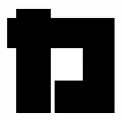
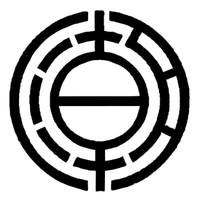

01 / GovTech
GovTech＆シビックテック
開発事業
生成AIや最新Webフレームワークを活用し、行政の非効率を解消するシステムや市民の政治参加を促すアプリの企画・開発・実装。住民サービスを根本からアップデートします。
生成AI
行政DX
市民参加
行政・政治・医療の3領域において、テクノロジーを武器に社会課題を解決します。
生成AIや最新Webフレームワークを活用し、行政の非効率を解消するシステムや市民の政治参加を促すアプリの企画・開発・実装。住民サービスを根本からアップデートします。
アナログな選挙戦を脱却し、データ解析や有権者インサイト分析を駆使した次世代の選挙・政治活動支援。政策立案からデジタルキャンペーンまで、政治家のDXをトータルサポート。
地域医療の拠点となる薬局等のDX支援。業務フロー最適化で医療従事者が「対人業務」に集中できる健全なシステムを構築。地域に根ざした医療インフラをアップデートします。
匿名陳情AIシステム
市民が匿名で行政への陳情・要望を送ることができるAI搭載システム。世界三大デザイン賞へのエントリーも予定する、日本発のシビックテック・フラッグシッププロダクト。
シビックテック・プロダクト｜大阪府松原市
過去8年分の議会議事録データを生成AI（FastAPI等）で解析・全文検索可能にした先進的シビックテック・プロダクト。議会の透明性を高め、市民が政治をより身近に感じるためのデジタルインフラを提供。
北海道から沖縄まで。圧倒的な全国規模の実績。
現職衆議院議員・参議院議員を含む多数のエリアで支援実績があります。


プロボノ提供含む
札幌市・宮城県・仙台市・名取市・岩沼市・鎌倉市・厚木市・座間市・日野市・豊島区・渋谷区・葛飾区・小金井市・八潮市・牛久市・立川市・箕面市・茨木市・尼崎市・養父市・奈良市・いなべ市・四日市市・松山市・那覇市
政治の現場とテクノロジーの最前線、双方を知る異色のチームが社会を動かす。
代表取締役（CEO）
宮城県名取市議会議員 ／ 薬剤師 ／ 経営学修士（MBA） ／ 予備自衛官補 ／ プログラマー
🏛 現職：宮城県 名取市議会議員
薬剤師として東証一部上場企業に入社。人事部にて社内トップの成績を収めた後、商品開発チームにて基礎化粧品をゼロから開発し、商品化を成功させる。さらに大学病院門前薬局で経験を積み、店舗開発および薬局長兼、管理薬剤師を歴任。
現場の医療、商品開発、組織マネジメントの全工程を経験する中で「医療インフラのアップデート」の必要性を痛感し、岩手県での3ヶ月間に及ぶプログラミング合宿（八幡平市スパルタキャンプ）に参戦。技術を習得後、グロービス経営大学院でMBAを取得。
現在は宮城県名取市議会議員としてパブリックアフェアーズを牽引しつつ、予備自衛官補として国防の現場にも携わる。医療・プロダクト開発・経営戦略・政治の4領域を横断し、社会のバグを修正する「フルスタック・ストラテジスト」。
取締役 CTO（最高技術責任者）
⚙️ AI・シビックテックエンジニア｜令和ボイス・議事録AIリードアーキテクト
IT企業でのSE経験を経て、独学で生成AIとプログラミングを修めたAI・シビックテックエンジニア。2016年、熊本地震直後のハッカソン（Startup Weekend ALL for Kumamoto）にて社会課題プロダクトを実装し優勝。これを原点に、「令和ボイス」や「議事録AI検索システム」のリードアーキテクトとして、日本の民主主義のシステムアップデートを牽引する。
建設コンサルタントとして津波や豪雨の防災業務に従事（防災士）、農業法人役員や狩猟免許の保有など、自然災害や一次産業という「フィジカルな現場のバグ」をも熟知。多数の国会議員との接点を持ち、国政政党のシステム開発も手掛ける。現在は「AI×政治」を掛け合わせ、同時に3名の地方議員の政策立案を支える政策スペシャリストとしても活動。
社会のあらゆる層に「新しいCode」を流し込む。松原市議会議員選挙2026立候補予定
丸吉孝文 公式ホームページ
maruyoshi-takafumi.com